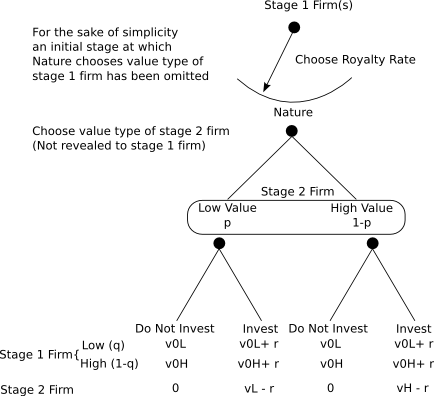
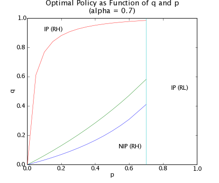
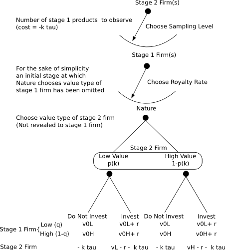

Cumulative Innovation, Sampling and the Hold-Up Problem
Rufus Pollock
[Cambridge University]
Examples
Music
- Reuse either explicit or implicit is ubiquitous
- Dance and hip-hop: explicit 'sampling' is the basis of the genre
- All composers whether classical or modern reuse previous musical, ideas, motifs, and melodies
- Should have to license those recordings actually used in the 'release'
Software
- A new 'app' will likely combine many ideas (and even code) from previous products.
- Ideas can only come from applications that one has encountered (sampled)
- May try out many different approaches in the prototype
- Will only license (if at all) once nearing 'production'
Documentary Films
[The] 90-minute documentary [Wanderlust] ... was also a window into the frustrations of making a clip-intensive film dependent on copyright clearance, which has become hugely expensive in the past decade. Initial quotations for the necessary sequences came to more than $450,000, which would have raised by half the cost of the IFC film. ... "Paramount wanted $20,000 for 119 seconds of 'Paper Moon,' " Ms. Sams said. "The studios are so afraid of exploitation that they set boundaries no one will cross. Even after the prices were cut, we were $150,000 in the hole."
(from the NY Times No Free Samples for Documentaries: Seeking Film Clips With the Fair-Use Doctrine)
Framework
-
Cumulativeness: New innovations reuse old
-
Rights regime: With IP rights second-stage innovators have to license (without them no restrictions on reuse).
-
Licensing transfers rents from second-stage to first-stage and enables some first-stage innovations which would not be profitable otherwise
- Imperfect information: licensing isn't perfect and giving out IP rights can result in hold-up
- Sampling: new innovators can only use innovations they have encountered through some form of sampling (search and trialling).
Structure of this talk
- Simple (standard) model of 2 Stage Cumulative Innovation
- Sampling model (sampling by second-stage firms)
- Conclusions
Model 1:
Simple 2-Stage Cumulative Innovation

Solving
- With IP: set either high or low royalty. Under high royalty there is holdup: low value 2nd stage innovations don't happen
- High royalty chosen if probability of a high value innovation is high (p is low)
-
WELFARE: Under high royalty comparing IP to no IP there is a trade off between:
- Hold-up costs (second stage innovations that do not happen)
- Extra first stage (and dependent second-stage) innovation because of licensing revenues

Prefer IP to No IP if:
$$\textrm{%tage extra 1st stage innovation} \geq \frac{\textrm{Expected Holdup Cost}}{\textrm{Net Surplus From 2nd Stage} + \textrm{Expected Holdup Cost}}$$
NB: net surplus gets smaller the more of license revenue used to pay for 1st stage innovation costs
Model 2:
Cumulative Innovation with Sampling

Results
IP preferable to No IP if and only if:
$$\textrm{%tage Extra 1st Stage)} \geq \frac{ \textrm{Benefit of Higher Sampling w/o IP} + \textrm{Holdup Cost}} { \textrm{Net Surplus 2nd Stage} + \textrm{Benefit of Higher Sampling w/o IP} + \textrm{Holdup Cost}}$$
Numerator increases as:
- Cost of sampling goes down
- Value of sampling increases (i.e. difference between high and low value innovations)
Conclusion
Basic Model
- The presence of intellectual property rights can lead to holdup of second stage innovation
- Trade this off against more 1st stage (and dependent 2nd stage) innovation
- Need to keep in mind that we care about welfare not innovation: very fact transfers are needed indicates that some of licensing revenue is used for first stage costs
Sampling Model
- The presence of intellectual property rights may restrict the level of sampling below what would be socially optimal.
- There is a trade-off between the benefits of transferring revenue to first-stage innovators and the costs in terms of fewer second stage innovations (with higher average cost).
- The lower the cost of sampling and the greater the differential between low and high second-stage costs the more likely it is that a regime without intellectual property rights will be preferable.
Take Away
- Technological change which reduces the cost of encountering and trialling new 'ideas' implies a reduction in the socially optimal level of intellectual property rights such as patents and copyright.
- Examples of such technological change in recent years include the advances in computers and communications which have:
- dramatically reduced the cost of accessing and reusing cultural material such as music and film
- greatly increased the number of 'ideas' that a software developer can encounter and trial
Thank you!
Comments to: rufus.pollock@thefactz.org